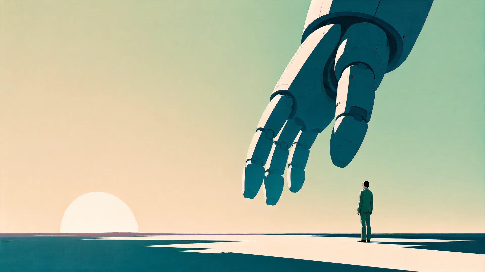
Intelligence is about to get a body.
Essays, films, and experiments about frontier technology becoming real — from someone who builds it. The right response isn't panic or hype. It's walking up close.
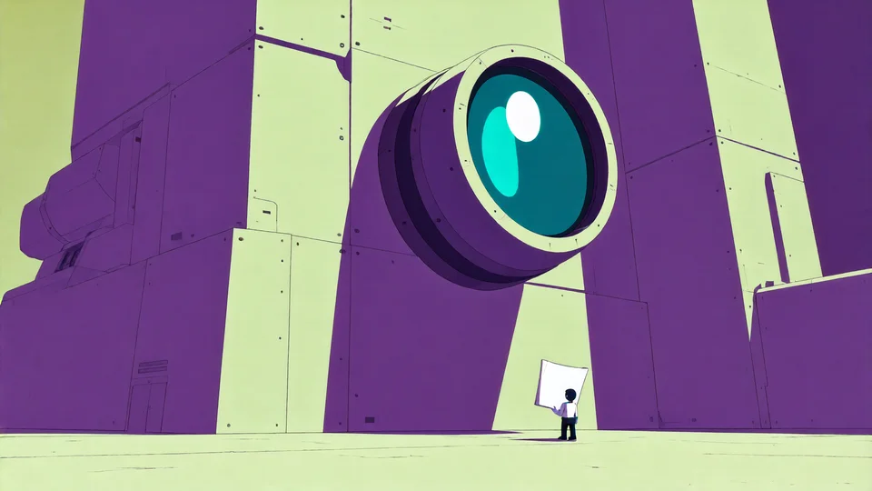
How closing a loop around the benchmark's own evaluator won a NeurIPS 2025 challenge.
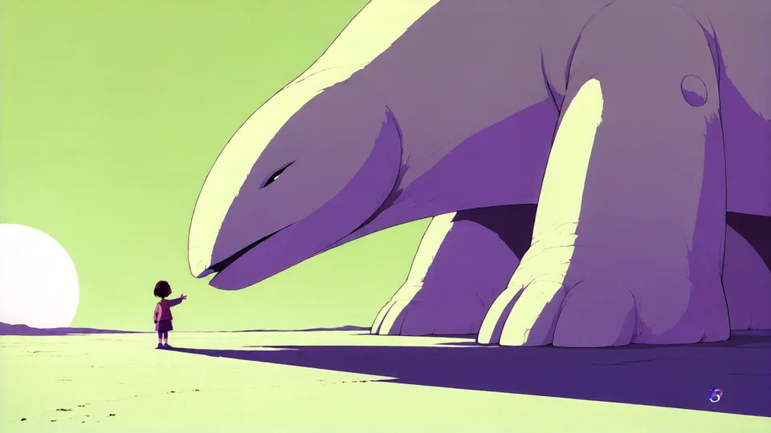
The essay's argument, retold as a visual story. Keyframes are being drawn now.
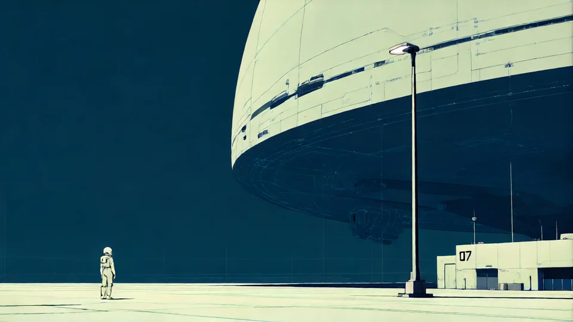
Teaching a model to draw everything on this site — one LoRA, one world, six weathers.
The same scene, re-rendered. Each part of the site gets its own weather — the Lab lives in blueprint, notes in nocturne, launches in poster.
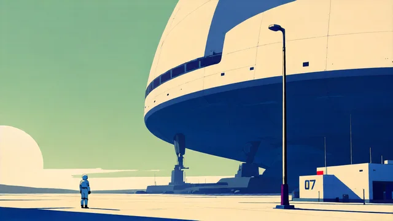
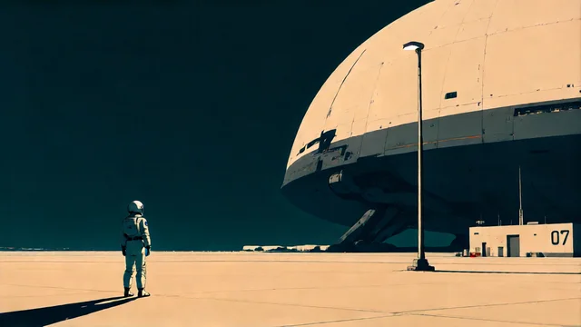
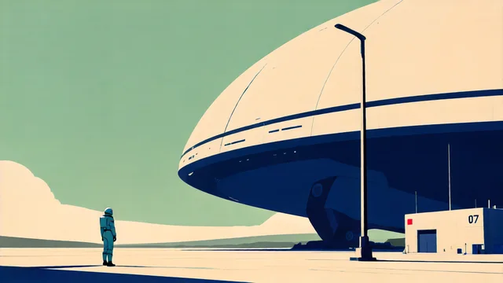
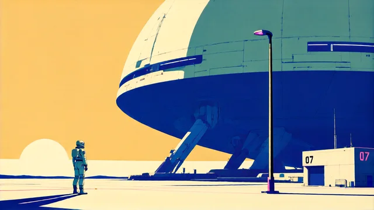
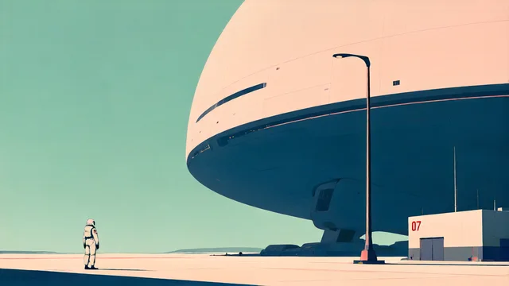
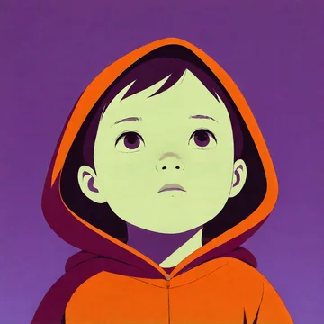
The thesis — why the next AI revolution happens in the physical world.
02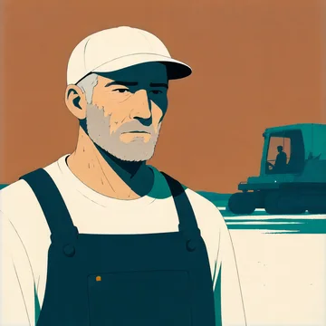
The evidence — a weaker model with a real evaluator beats a stronger one without.
One flagship every few weeks. No feed, no roundups — only things worth remembering.
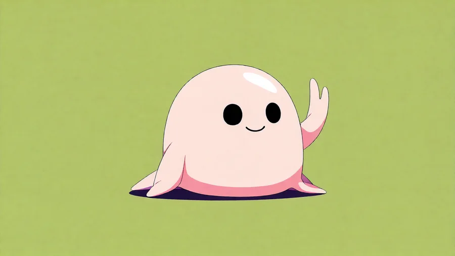
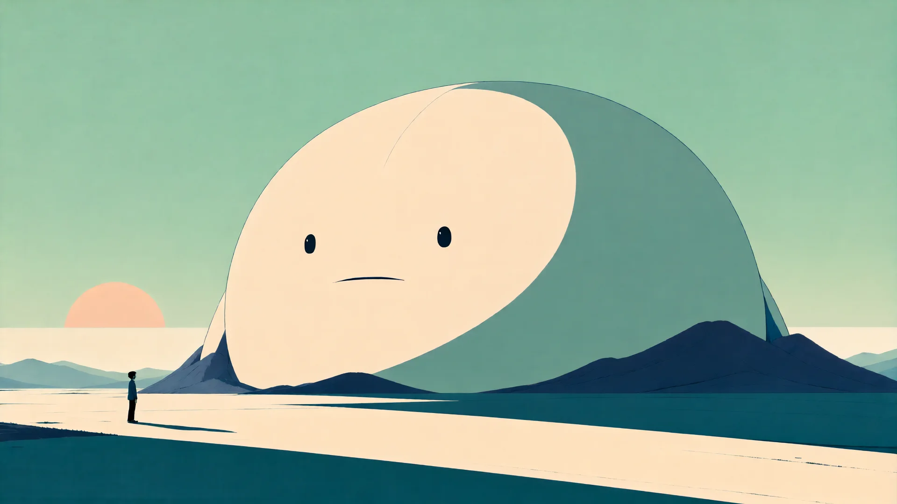